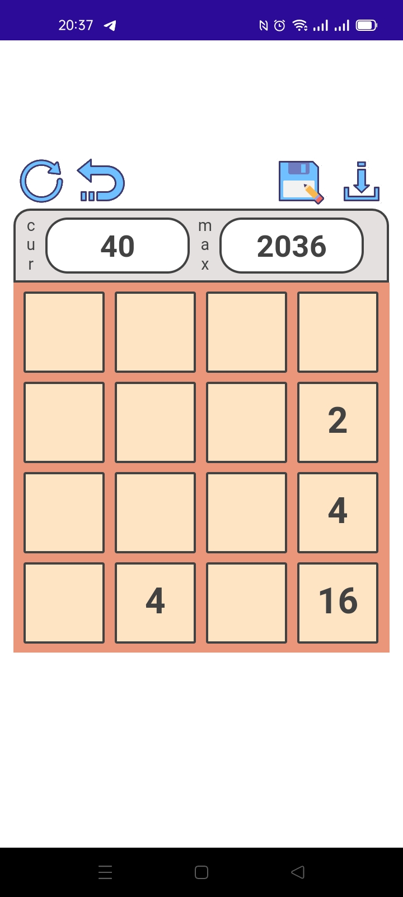

chamskra66er
|
Home
/
Current skills
/
Experience
BOSStarter BOSLayer BOSReborn
BOSStarter
ПО, предназначенное для внутренних нужд компании. Консольное приложение, с возможностью управления через окно из трея. Запуск приложения возможен из webapp(
BOSReborn
) через прослойку
BOSLayer
с передачей данных для удаленного доступа (teamviewer,anydesk,iiko) в
BOSStarter
через wcf с дальнейшим запуском rdp приложений. ПО так же предназначено для работы с ftp сервером, для контроля ПО IIKO с возможностью удаления, загрузки IIKO в локальное хранилище.
BOSReborn
серверное приложение, написанное на Blazor. Разработка функционала аутентификации и авторизации с интеграцией AD через ldap и т.д.
BOSLayer
консольное приложение, которое передает данные из BOSReborn в BOSStartter.
Доработка и фикс багов по
LemmaPlatform
серверное приложение на Aps.Net mvc core.
Интеграция модулей, для взаимодействия с 1С, телеграм ботами и с CRM elma365.
The well-known game of tic-tac-toe. The server part is implemented on
ASP Net Core
. The client part is written in
Winforms
. Communication between client and server is done via
SignalR(Hub)
.
Commercial store for buying coins with the ability to pay via paypal and convenient delivery method and with multilingual extension. Web app implemented on
ASP Net Core
.
This is a cross-platform web app - discussion forum. Web app implemented on
ASP Net Core
.
This is a cross-platform application that works with
vk api
. With it, you can listen to your songs, songs of other users, songs of vk groups. And most importantly, you can download them immediately.
Widely known game 2048 on WinForms.

Widely known game 2048 on NetMaui Blazor with multilingual support builded after a long time when maui was born. The game has the ability to save the map to local storage for later loading. Saving the game to cache is also implemented.
Parser for job search on sates hh, gorodrabot with the ability to save data into .xlsx, .txt, pdf.